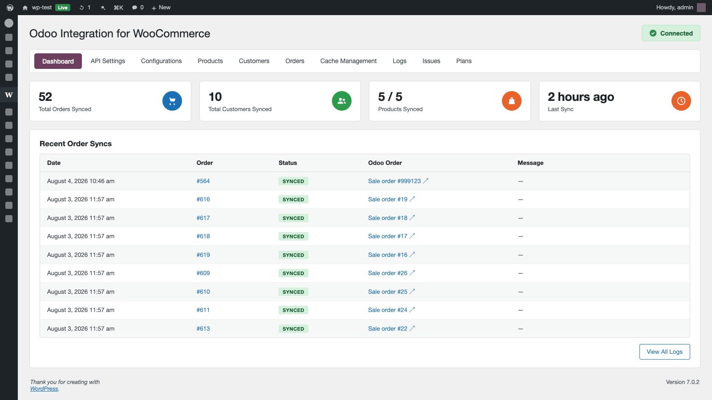

Orders, products, customers and stock flow between WooCommerce and Odoo automatically. Invoices and payments included. Set up in minutes, no CSVs.
Get the free plugin on WordPress.org →wordpress.org/plugins/erp7-solutions-sync-for-odoo-and-woocommerce
Free plan · No credit card required
Every WooCommerce order that gets keyed into Odoo by hand is a chance to get the quantity, the tax or the customer wrong. Every stock figure that lags behind is an oversell waiting to happen. This connector keeps both systems telling the same story, continuously, without anyone touching a spreadsheet.
Orders, both waysNew WooCommerce orders arrive in Odoo as sales orders in real time. Fulfilment status and tracking numbers push straight back to the store. |
Products & variantsFull variant matrix, pricing, images and attributes. Map existing catalogues by SKU rather than starting from scratch. |
Live inventoryOdoo stays the source of truth. Stock levels push to WooCommerce as they change, so the storefront stops selling what you don't have. |
Invoices & paymentsTaxes, discounts, shipping and refunds land in the right Odoo accounts, so your accountant isn't reverse-engineering the storefront. |
CustomersContacts, billing and shipping addresses, matched to existing Odoo partners instead of creating duplicates on every order. |
Reliability built inFailed syncs retry automatically and can be replayed. A full audit log shows exactly what moved, when, and what didn't. |

|
1
|
Install the free plugin on your WordPress site |
|
2
|
Connect your Odoo instance with an API key — no server access needed |
|
3
|
Choose what to sync and in which direction |
|
4
|
Run the first sync and watch orders arrive |
This connector transmits store and Odoo record data to the OdooConnector cloud service in order to perform synchronisation. Data is processed solely to provide the sync service and is never sold or shared. Full details in the privacy policy.
Free plan available. Upgrade when your volume grows.
Get it free on WordPress.org →wordpress.org/plugins/erp7-solutions-sync-for-odoo-and-woocommerce
Questions? support@odooconnector.cloud